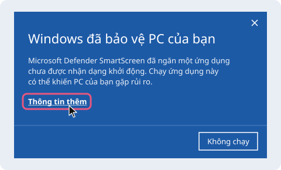
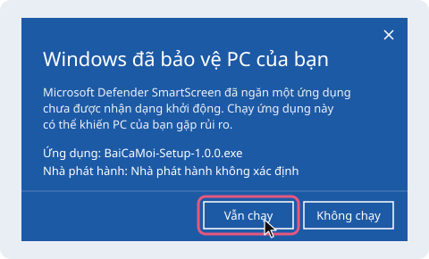
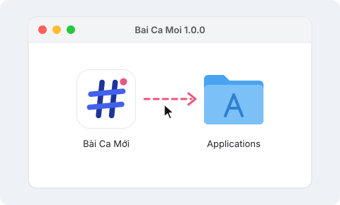
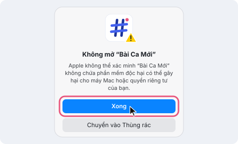
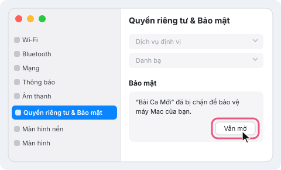

Bài Ca Mới
Trình phát bài ca mới cho buổi thờ phượng, dùng trên máy tính Windows và Mac.
Tải về miễn phíChọn bản cho máy của bạn
Mỗi bản đã có sẵn chức năng tự cập nhật khi có phiên bản mới.
Máy Mac của tôi dùng chip gì?
Bấm vào logo quả táo ở góc trên bên trái màn hình, chọn Giới thiệu về máy Mac này. Nếu dòng Chip ghi “Apple M…”, hãy tải bản chip Apple. Nếu dòng Bộ xử lý ghi “Intel”, hãy tải bản chip Intel.
Cài và mở app lần đầu
App chưa đăng ký chữ ký với Microsoft và Apple, nên lần đầu máy sẽ hỏi lại cho chắc. Chỉ cần làm một lần.
Hình minh hoạ đã được vẽ đơn giản lại; màn hình trên máy bạn có thể khác đôi chút.
Windows
- Mở file BaiCaMoi-Setup vừa tải về.
- Nếu hiện khung xanh “Windows đã bảo vệ PC của bạn”, bấm Thông tin thêm
rồi bấm Vẫn chạy. (More info → Run anyway)

Bấm “Thông tin thêm” 
Rồi bấm “Vẫn chạy” - Chọn nơi cài (để mặc định là được), bấm Install, rồi Finish.
- Mở app từ biểu tượng Bài Ca Mới trên màn hình hoặc trong menu Start.
Mac
- Mở file .dmg vừa tải về, rồi kéo biểu tượng Bài Ca Mới vào thư mục Applications.

- Mở app trong Applications. Máy sẽ báo không thể xác minh app: bấm Xong. (Done)

- Mở Cài đặt hệ thống → Quyền riêng tư & Bảo mật,
kéo xuống dưới cùng, bấm Vẫn mở. (System Settings → Privacy & Security → Open Anyway)

- Bấm Vẫn mở thêm một lần nữa và nhập mật khẩu máy. Từ lần sau app mở bình thường.
Đừng mở app trực tiếp từ trong file .dmg. Hãy kéo vào Applications trước, nếu không lần sau sẽ không tìm thấy app.
Cập nhật
App tự kiểm tra phiên bản mới mỗi khi mở. Bạn cũng có thể bấm Kiểm tra cập nhật trong Cài đặt của app.
Trên Windows
App tự tải bản mới ở nền và tự cài khi bạn tắt app. App không bao giờ tự khởi động lại giữa buổi. Muốn cài ngay, mở Cài đặt và bấm Khởi động lại để cập nhật.
Trên Mac
Góc trên của app hiện Có bản mới. Bấm vào, chọn Tải bản mới, mở file .dmg và kéo app vào Applications, chọn Thay thế khi máy hỏi.